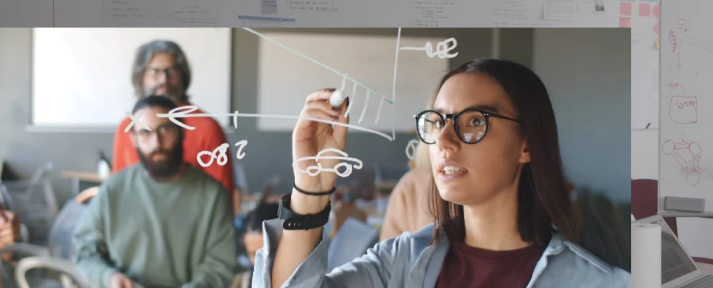

Bootcamp d’innovation interdisciplinaire, de l’analyse d’un problème complexe au prototypage fonctionnel. Des formations gratuites grâce à nos partenaires.
Innovation Lab

Concept de l’Innovation Lab
L’Innovation Lab est une formation à l’innovation responsable par le design
Interdisciplinaire
Chaque promotion est interdisciplinaire et réunit des profils variés issus des métiers du design, des technologies, des sciences sociales, de l’entrepreunariat.
Responsable
L’innovation Lab place l’impact sociétal au coeur de ses objectifs, et propose des enseignements qui ouvrent vers des modèles de circularité, de décentralisation, de co-design et d’eco-conception.
Concret
Chaque lab travaille sur une thématique spécifique, et explore des problématiques concrètes identifiées avec les partenaires professionnels de la Plateforme.
Métiers
La finalité du lab est de former des chefs de projets capable de travailler dans différents environnements, d’apporter une analyse complexe des problématiques et de piloter la recherche de solutions innovantes par le design centré usagers